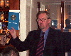
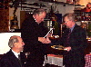
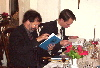
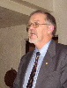

Program
Mötesreferat
Bli medlem
Historik
Stadgar
Samla mynt
Jubileumsbok
Jubileumsbok 2009
Jubileumsbok 2019
Småskrifter
Auktionskatalog
Länkar
Kontakt
(Obetydligt omarbetad text ursprungligen publicerad i Numismatiskt Forum, nr 1, 2000)
Kjell Holmberg
För drygt 30 år sedan, den 26 mars 1969, samlades ett tjugotal myntintresserade på Slottskällans Café i Uppsala. Innan kvällen var över hade Numismatiska Klubben i Uppsala grundats. Initiativet till klubben togs av Ingemar Nylund. Klubbens förste ordförande blev den i numismatiska sammanhang välkände Bertel Tingström. Den 7 december 1999 firades detta 30-årsjubileum med festligheter på Suttungs krog i Uppsala. Även denna gång hade ett drygt tjugotal medlemmar och prominenta gäster hörsammat kallelsen. Som traditionen bjuder i Uppsala, så inleddes firandet av Lars O. Lagerqvist, som denna gång valt att tala om "Minnen av pengar och mynthandlare - ett lättsamt causerie". Lagerqvist hade mycket att berätta om såväl personliga egenheter hos de klassiska handlarna, som historier kring kända och spektakulära mynt som omsatts i handeln under de senaste decennierna. Kåseriet uppskattades (som vanligt) mycket av åhörarna, och föranledde flera av de närvarande att komplettera med egna minnen. Bl.a. tog ordföranden i Stockholms Myntklubb, Carl-Axel Lindblom, upp tråden och berättade målande om sina egna minnen från 40-talet och framåt.
När diskussionerna efter kåseriet avklingat tog klubbens ordförande, Harald Nilsson, till orda. Efter en kort välkomsthälsning kunde han presentera de första exemplaren av klubbens jubileumsbok - "Samlad Glädje". Boken, som precis levererats från tryckeriet (samma dag!), är tryckt i 450 exemplar, varav de första 50 numrerats. Den vackert inbundna publikationen innehåller 21 artiklar av såväl amatörer som flera av våra mest kända och kunniga professionella numismatiker. Artiklarna behandlar mynt, medaljer och polletter - samt naturligtvis klubbens 30-åriga historia. En tydlig vinkling mot Uppsala och Uppland kan urskiljas i valet av ämnen.
Exemplar nr 1 av "Samlad Glädje" överlämnades till klubbens förste ordförande, och en av klubbens grundare, Bertel Tingström. Nr 2 erhöll klubbens andre ordförande, Lars-Erik Ahlsson. Exemplar nr 3 erhöll klubbens "ständige julfest-kåsör", Lars O. Lagerqvist. Övriga närvarande författare erhöll också var sitt numrerat exemplar. De medlemmar som slutit upp hade också möjlighet att förvärva ett numrerat exemplar. Kanske en kommande raritet bland litteratursamlare? När väl boken delats ut eller förvärvats av de närvarande gästerna utbröt ett ivrigt bläddrande och läsande, kommenterande och diskuterande. Alla föreföll glatt överraskade över det högklassiga innehållet, och den allmänna uppfattningen var att detta var en stor händelse i klubbens historia. Man skall betänka att klubben har knappt 50 medlemmar, och att det knappast hör till vanligheterna att en klubb av den storleken tar på sig ett så omfattande uppdrag som att ge ut en kvalitetspublikation i ämnet numismatik.
Den efterföljande middagen var utsökt, och flera inbjudna gäster tog till orda och gratulerade klubben till dess jubileum. Carl-Axel Lindblom framförde gratulationer från Stockholms myntklubb och Torbjörn Sundquist framförde Svenska Numismatiska Föreningens varma gratulationer. Under middagen hördes många intressanta ämnen behandlas, delvis inspirerade av bokens artiklar, delvis spontant framförda frågeställningar och funderingar. Man kunde t.ex. grunna över hur de gamla romarna kunde har skrivit årtalet 1999 med romerska siffror? Är det verkligen tillåtet att skriva "MIM"? Meningarna gick isär. Vidare fick vi reda på vad som egentligen hände med T. G. Appelgrens egen myntsamling efter hans död 1950!
Som sagt - ett lyckat jubileum, som ger mersmak och inspiration inför framtiden. Klubben fick förresten några nya medlemmar denna kväll, men det finns definitivt plats för flera! För den som är intresserad av medlemskap finns mera information på klubbens hemsida: http://www.nku.nu . Beträffande boken kan nämnas att den kan beställas genom att betala 225 kr till klubbens postgiro 54 52 84 - 2. Då ingår porto och försändelse inom Norden. Den kan också köpas på klubbens möten.
Bilder:
Klicka på bilden för större version.

Lars O. Lagerqvist kåserar över ämnet "Minnen av pengar och mynthandlare".

{kind=link}
Ordföranden Harald Nilsson förevisar här det första numrerade exemplaret av klubbens jubileumsbok, Samlad Glädje, som sedan överlämnades till Bertel Tingström, en av klubben grundare och dess förste ordförande.

{kind=link}
Här erhåller klubbens "ständige julfest-kåsör", Lars O. Lagerqvist, sitt exemplar av Samlad Glädje ur ordföranden Harald Nilssons hand. Längst till vänster ser vi Bertel Tingström.

{kind=link}
Frands Herschend och Frédéric Elfver ivrigt studerande innehållet i jubileumsboken.
{kind=link}
Christian Hamrin verkade mycket nöjd med att se sitt bidrag i tryckt form.

{kind=link}
Svenska Numismatiska Föreningens ordförande, Torbjörn Sundquist, passade på att framföra SNF's varma gratulationer till såväl 30 års framgångsrik verksamhet som till den uppskattade jubileumsboken.